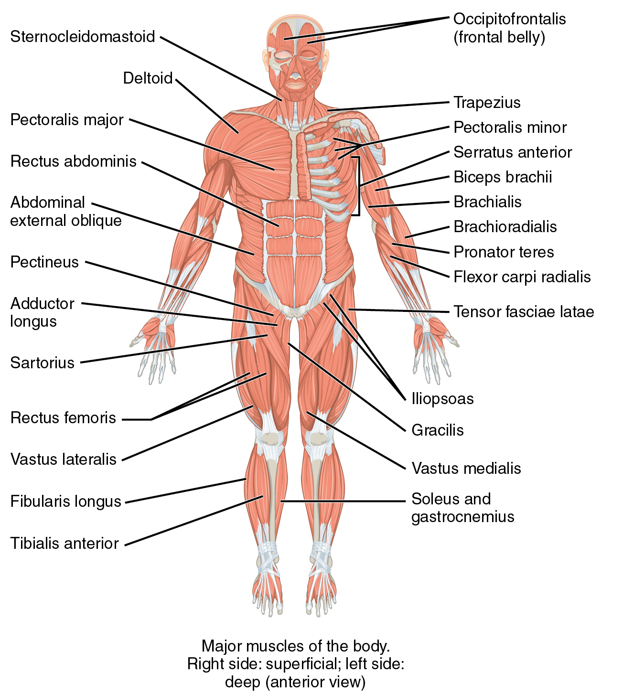
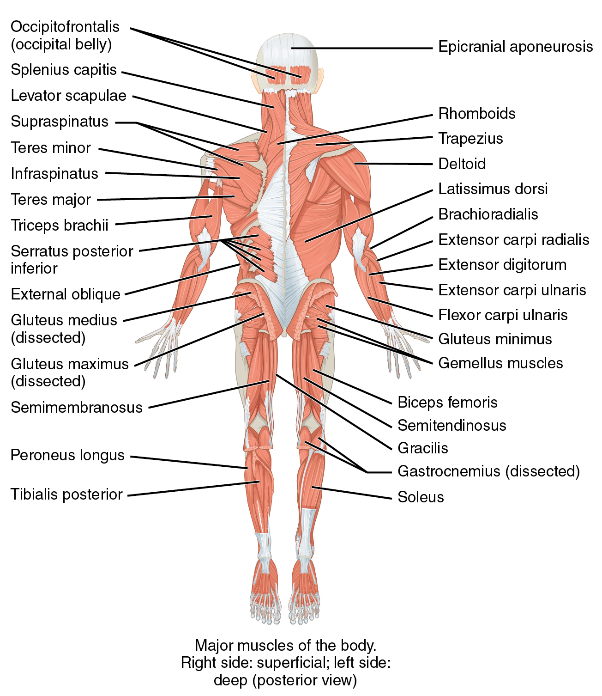
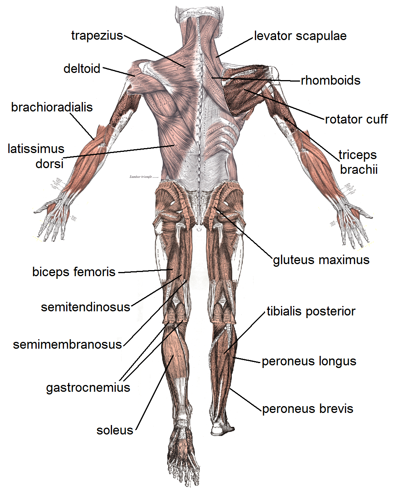

트레이닝 캔버스
·
역도 기록
해부학 가이드
OpenStax · Gray's Anatomy 원판으로 보는 기능해부
전체
Pull
Push
Leg
역도
전신 근육 맵 (OpenStax)

Anterior · 전면

Posterior · 후면
라벨 포함 Gray's 판 (Public Domain) 펼치기
Gray's anterior labeled

Gray's posterior labeled
운동면
운동사슬
Gray's detail
Gray's detail
주동근
협응근
기시 · 정지
신경지배
관절 동작
왜 이 동작? (코칭)
자격증 포인트 (생리·역학)
큐 (폼)